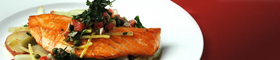

Cafe Fontainebleau
Aperitivos | Entradas | Sobremesas | Sexta-feira Especial
Aperitivos

- Sopa de tomate assada - servida com croutons de queijo de cabra e purê de manjericão.
- Salada de verão - manteiga orgânica de alface com maçãs, laranjas sanguíneas e gorgonzola, misturada com vinagrete de framboesa.
- Fondue de Brie, Queijo de Cabra e Gruyere - servido com maçãs verdes e crostini de alho. Boa para compartilhar.
- Pão crocante - coberto com asiago, presunto e rúcula.
-
Yellowfin Ahi Tartare - servido em uma cama de repolho picado com molho de abacate e um verde
molho de pimenta.
Entradas

- Pancetta embrulhado vieiras tostadas - regadas com purê de estragão. Servido com couve-flor assada no forno gratinar em um molho gruyere picante.
- Cajun Seafood Bouillabaisse - com lagostins, vieiras, bagres, caranguejos e mexilhões. Servido com Pão de milho ao estilo sulista e manteiga de mel.
- Macarrão Cavatappi com Molho Picante de Grão de Bico - temperado com berinjela grelhada, azeitonas verdes e sol tomates secos. Coberto com queijo feta mediterrâneo.
- Costeleta de porco de corte duplo esfregada com sálvia - coberta com um guisado de cogumelos e pancetta robusta. Servido com bolos de milho grelhados.
-
Lasanha à Bolonhesa - massa caseira entre camadas de carne de porco cozida lentamente e bife à
bolonhesa molho. Servido com espargos orgânicos.
- Sake-soaked Kobe Beef Tartare - servido com tempura de flor de abóbora recheada com fontina e creme molho de wasabi.
Sobremesas

- Tiramisu - sobremesa italiana fresca e refrescante.
- Pêras Assadas com Molho de Caramelo - cobertas com sorvete caseiro de baunilha.
- Pumpkin Creme Brulee - servido com nossos famosos biscoitos de gengibre.
- Cheesecake de Nova York - cheesecake tradicional cremoso coberto com calda de chocolate amargo e morangos recém-colhidos.
- Sacher Torte - três camadas de bolo de chocolate amargo, recheado com geleia de damasco caseira, coberto em um glacê de chocolate cremoso e rico.
Sexta-feira Especial

- Halibute do Alasca com molho rico de Beurre Blanc do Vale do Loire - servido com purê roxo peruano batatas e haricot verts.
- Recomendado combinar: '98 Passi Emilio Vineyards Sauvignon Blanc